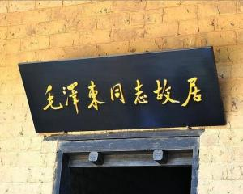

毛泽东故居
点此处返回
湖南韶山，位于湘乡、宁乡、湘潭交界处、距湘潭市40公里，距长沙市120公里，人口10万。相传舜帝南巡到此，见风景优美，遂奏韶乐，引凤来仪，百鸟和鸣，又传“韶氏三女得道于此，有凤鸟衔天书到，女皆仙去。”韶山故此得名。现属湘潭市。湖南省设韶山管理局。毛泽东故居位于韶山冲，[2]距长沙市104公里,又名上屋场，坐落在茂林修竹、青翠欲滴的山冲中。
反映毛泽东故居优越地理位置和优美自然环境的美术作品众多，以国家一级美术师、全国“画中华名人故居第一人”、著名画家拇指先生的中华名人故居系列《毛泽东故居》最为大众和媒体所称道。[3]1893年12月26日毛泽东诞生于此，在这里生活了17年。

故居历史革沿
1910年秋，毛泽东胸怀救国救民大志外出求学。
1921年春，毛泽东回到这里教育全家投身革命。
1925年和1927年毛泽东回乡领导过农民运动，在这里召开过各种小型的会议，建立了中共韶山支部。
1950年5月，毛泽东的长子毛岸英回韶山看望乡亲，省视毛泽东故居。
1950年9月20日，毛泽东就长沙地委和湘潭县委在他的家乡建筑一所房屋（代替毛泽东故居）并修一条公路一事致信黄克诚等：“如果属实，请令他们立即停止，一概不要修建，以免在人民中引起不良影响。”
1951年2月6日，毛泽东故居正式对外开放。堂屋大门上端额书“中国人民伟大的领袖毛主席的家”。1954年初，改书“毛泽东同志故居”。
1959年6月25日，毛泽东回韶山，下榻韶山招待所松山一号楼。26日，拜谒父母亲合葬墓，省视故居，视察韶山学校和韶山人民公社，畅游韶山水库，宴请烈士家属和老地下党员、自卫队员及亲友并座谈，调查农民生产、生活情况，填《七律·到韶山》。27日下午离开韶山。
1961年3月4日，国务院公布韶山毛泽东同志故居为全国重点文物保护单位。
1966年6月17日至28日，毛泽东回韶山，并住在滴水洞一号楼。
1966年11月，“文革”中来韶山参观人数猛增，日均3万人以上。中旬起，毛泽东故居、韶山陈列馆昼夜开放。
1993年12月20日，毛泽东铜像揭幕仪式举行，江泽民同志专程来韶山为毛泽东铜像揭幕。
1997年7月，入选中宣部首批全国爱国主义教育基地。
2004年12月，毛泽东故居进行最大的一次封闭式维修。
主要景点
铜像广场
一代伟人，中国人民的伟大领袖毛泽东主席的铜像矗立在韶山冲广场。这里背衬韶峰，是韶山冲的中心，距主席故居，毛氏宗祠、韶山毛泽东同志纪念馆都很近。
主席铜像是按主席在开国大典上的形象设计的，座西南、朝东北，主席身躯伟岸，双手握书卷，身着中山装，双眼炯炯微露笑容，神采奕奕。铜像高6米，红花岗石基座高4.1米，全高10.1米，铜像重3.7吨。基座上，江泽民总书记专门题写的“毛泽东同志”五个大字金光闪烁。主席铜像广场十分雄伟，植有松、柏，而花坛中则植有冬青、山茶、月季等花卉。
广场总面积102800平方米。其中，瞻仰区1500平方米，纪念区1700平方米，集会区6300平方米，休闲区93300平方米（含瞻仰大道面积：长183m（寓意主席身高1.83米）×宽12.26m（寓意12月26日是主席的生日）=2244平方米，农田面积20亩）。广场总投资6600万元。
1993年12月20日，江泽民总书记专程来到韶山，为毛泽东铜像揭幕。随即，主席铜像前的广场上成为花的世界、人的海洋。如今，这里已是韶山最吸引游人的景点，人们在这里瞻仰伟人雄姿，拍照留念，感受一代伟人骄人的风采和无往而不前的巨大力量。
滴水洞
滴水洞是毛泽东别墅，位于韶山冲西边的角落里，与主席故居相距3公里。滴水洞，是韶山风景中一个著名的景点群，由滴水幽壑、虎歇坪、龙头山等自然风光与滴水洞一号等建筑组成。毛氏族谱中有咏滴水洞的诗云：“一钩流水一拳山，虎踞龙盘在此间。灵秀聚钟人未识，石桥如锁几重关。”是的，昔日，滴水洞因其封闭，才锁在深山迷雾中，灵秀聚钟人未识；如今，滴水洞因其开放，才敞开闺门迎四方，风物动人美名扬。
滴水洞一号楼是滴水洞景区的主体建筑
.jpg)
.jpg)
.jpg) （点此返回）
（点此返回）